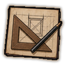
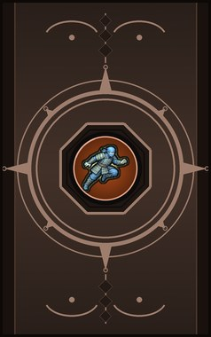
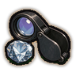
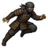
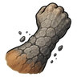
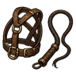
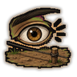
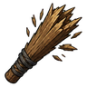
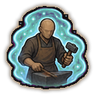

Technical path I D
D-rank passive. Choose a technical path: faster crafting.

Technique trees › Skills and beast arts
9 techniques · Ninjutsu tab
Learned from technique scrolls, mission rewards, written scrolls and scroll merchants; some NPC ninja know it. It counts toward the ninja build like other trees.

D-rank passive. Choose a technical path: faster crafting.

D-rank passive. Appraise anything at a glance.

D-rank passive. Moves easily in armour.

D-rank. Harden your skin to stone for a while.
| Rank | Chakra | Cooldown | Class level |
|---|---|---|---|
| D | 10 | 15 s | 2 |
C-rank passive. Your path deepens.

C-rank passive. Leather-worker's way with animals.

C-rank passive. You spot traps before you step on them.

C-rank passive. Your strikes leave splinters and bleeding.

B-rank. Raise a warding aura for a fight.
| Rank | Chakra | Cooldown | Class level |
|---|---|---|---|
| B | 35 | 25 s | 9 |